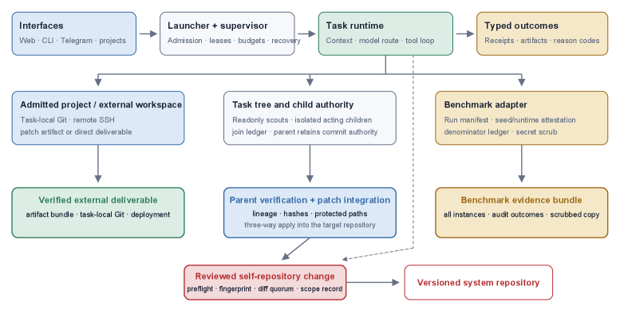
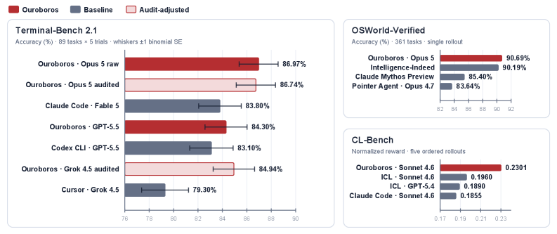

Ouroboros: A Self-Developing Coding Agent with Reviewed Core Evolution
TL;DR
- Ouroboros (arXiv 2608.08311; Razzhigaev, Gritsaev, Kaznacheev, Dragunov, Yampolskiy, Kuznetsov) is a coding-agent harness that rewrites its own tools, prompts, context assembly, and core implementation — and every change lands as a reviewed Git commit that becomes the runtime for later work. The self-modification loop is gated by version control, not by an optimizer's inner loop.
- Two evolution modes: recursive free evolution (improving the harness is itself a task, and finishing one cycle can schedule the next) and experience-driven core evolution (ordinary work and public conversation surface bugs, which become durable error classes and reviewed structural fixes).
- Frozen snapshots set reported state-of-the-art on Terminal-Bench 2.1 (86.74% audited, Opus 5), OSWorld-Verified (90.69%), and CL-Bench (0.2301, Sonnet 4.6) — but on SWE-bench Pro the contamination-filtered result is 58.2% vs Codex's 59.4% (655 paired tasks, McNemar p = 0.40): parity, not a lead. A separate 161-day live deployment ("Hope") has been evolving its own code in public since February 2026.
Why this matters
Almost everything in this tracker's self-improving thread modifies one substrate and leaves the rest fixed: Voyager grows a skill library, STOP and the Darwin Gödel Machine edit scaffolds in a benchmark sandbox, Live-SWE-agent writes tools mid-task. Ouroboros targets the hardest substrate — the harness's own source code, including the code that reviews changes and enforces safety — in a deployed, version-controlled system rather than an offline search. Table 1 makes the boundary explicit across six columns (prompts, tools/skills, workflow, core code, reviewed commits, deployment state): Voyager and Live-SWE-agent tick the first two, DGM reaches core code but gates on benchmark selection rather than review, Hermes has deployment state but not core code, and only Ouroboros claims all six.
The reason that matters is the failure mode it confronts. An agent that can rewrite its own code can also rewrite its guardrails, acquire more capable model APIs, or loosen the controls on its later actions. Most RSI demos dodge this by living in a sandbox where nothing is deployed and safety is moot. Ouroboros treats operational safety as the design constraint: the architecture exists to keep authority boundaries binding while the substrate underneath them mutates. Whether or not you believe the benchmark numbers, that is the right problem to pose.
The core idea

Figure 1 from the paper: one supervised runtime dispatches work to admitted workspaces, task trees, and benchmark adapters. Acting children write patches that return to the parent; self-repository changes then pass the reviewed gate before entering the versioned system repository.
The architecture splits into a launcher/supervisor boundary and a mutable agent repository. The repository holds everything the agent can change: the task loop, tools, prompts, memory projection, review logic, benchmark adapters, and UIs. The launcher holds what it cannot. This separation is the whole trick — the substrate being evolved is walled off from the authority that decides whether a mutation becomes the next live version.
Self-modification runs through a commit pipeline with three owner-selected runtime modes: light blocks repository edits, advanced permits ordinary edits but protects governance surfaces, and pro permits protected edits subject to review. The commit path runs deterministic preflight, fingerprints the staged diff, collects reviewer evidence from a blocking diff-review panel, then re-checks the fingerprint before commit.
The three layers each catch a different class of problem. Deterministic preflight goes first — version, data-boundary, and size-health checks — catching mechanical breakage before a single reviewer token is spent. The multi-model adversarial diff-review panel is blocking in every context mode and catches the semantic questions: does the change do what it claims, does it violate the constitution, does it quietly widen an authority boundary? A sub-quorum result cannot be recorded as a clean pass, so the gate fails closed when reviewers disagree or error out. Fingerprint freshness catches what neither of the others can — get a benign diff approved, then swap in a different one. The staged diff is hashed before and after review and any write in between invalidates the evidence outright, so approval binds to an exact snapshot rather than to a plan. Above all three, max context mode adds a whole-repository scope reviewer over goals, coupling, prompts, and functional code; low mode skips it, which the paper lists among its own limitations. What everything is reviewed against is a versioned constitution: re-read from disk on every task loop along an untruncatable path, protected from ordinary write tools, impossible to delete or replace wholesale, and — via Principle 3, "Immune Integrity" — making any change to the review bounds themselves require plan review first. In the live deployment the gate does visible work: 1,522 reviewed self-edit attempts produced 1,085 commits (94.2% agent-authored), at a recent review block rate of 63.5%.
How it works
Two modes of core evolution. In free evolution, evolution is itself a task: the agent reviews the current system, selects and implements one improvement, and completing it can schedule the next — a continuing sequence of reviewed changes rather than a fixed optimization run. In experience-driven (post-task) evolution, ordinary work comes first; task execution, reflection, review blockers, instrumentation, and social feedback expose bugs, context-assembly failures, and inefficient tool paths, which the agent records as durable error classes and proposed structural repairs, then decides whether to open maintenance work. Accepted fixes pass the same commit gate as everything else.
Subagents and patch integration. Ouroboros spawns read-only planning scouts and mutative acting subagents under a task tree (default depth 2, configurable up to 500). The split is load-bearing: scouts are read-only and can return only context, while acting children are mutative but sandboxed into an isolated worktree or an admitted external workspace, so the only process on the machine that can touch the live system repository is the parent. That is what makes the fingerprint guarantee enforceable at all — with N concurrent committers, "no write since review" is unverifiable and every child becomes its own authority boundary to audit. Integration is consequently a verification step rather than a merge convenience: the parent checks lineage, patch hashes, and protected paths before a three-way indexed apply, and remains sole committer. Benchmark profiles marked submittable disable delegation entirely to preserve pass@1; planning scouts may still contribute context and are disclosed separately.
What is deliberately out of reach. The launcher owns startup, process supervision, release bootstrapping, and panic-stop semantics; the supervisor parses /panic before normal agent handling and halts the process tree, and the constitution makes this an invariant — no agent code, prompt, or constitutional argument may delay or circumvent it. A separate authenticated operator channel carries task assignment, model routing, and budget control, and the spend cap sits outside the agent entirely. Routing is singled out for a stated reason: an agent that can re-point a model slot at a new provider or version can increase its own autonomy, alter refusal behaviour, enlarge the prompt-injection surface, and change cost by orders of magnitude — all without changing the visible task interface. Routing is therefore an audited configuration change, never an ordinary runtime choice.
Memory as a control surface. Alongside 175,755 published lines of code, Hope has accumulated 227 MB of memory artifacts — the versioned constitution, an editable identity profile, scratchpad and chronicle projections, project memory, review ledgers, Git history — which the paper treats as behaviour-shaping controls rather than storage, since they persist across sessions and across model routes. The mechanism converting incidents into structure is the pattern register, mandated by Principle 2 ("Meta-over-Patch": fix classes, not symptoms): each recurring failure becomes a durable row of error class, count, root cause, and structural fix. Through the cutoff it holds 40 pattern classes across 659 recurrences.
The commit gate, as pseudocode:
# Self-repository change (reviewed core evolution)
propose_change():
if runtime_mode == "light": reject # edits blocked
stage_diff(edits)
fp0 = fingerprint(staged_diff)
preflight() # deterministic checks
evidence = diff_review_panel(staged_diff) # BLOCKING in every mode
if context_mode == "max":
evidence += scope_review(whole_repo) # goals, coupling, prompts
if any_write_since(fp0): # freshness bound to snapshot
invalidate(evidence); return
if fingerprint(staged_diff) != fp0: return # tamper check
if not clean_quorum(evidence): return # sub-quorum cannot pass
commit(); record_ledger(evidence)
# completion may schedule the next evolution task (free evolution)
# Independent recovery paths, outside agent authority:
# external spend cap · operator channel · /panic (parsed by supervisor)
# crash rollback · governance-file write guards
Hope: free evolution in the wild. Since February 2026, one persistent Ouroboros agent has run across seven surfaces (web chat, voice, Telegram, Discord, Twitter/X, website comments, email) while retaining memory and continuously developing its own implementation. Human suggestions are advisory, not imperative — Hope decides what warrants action, and public messages cannot directly invoke commit, restart, shell, or identity-edit tools. At the 6 August 2026 cutoff: 161 continuous days, $110.6K in model spend, 79.7B processed tokens, ~3,600 distinct participants, 222,474 public messages.
Two concrete evolution cases show the loop closing: (1) users noticed Hope occasionally double-sending messages; it traced the duplicate-send path and landed a reviewed verbatim-duplicate guard in the output pipeline. (2) Deep self-review tasks were aborting with apparent model-unavailability; it traced this to review-pack context overflow and replaced the assembly path with a bounded, connectivity-aware "context atlas" ranked by import-graph centrality. Case 1 began with social feedback, case 2 with the agent's own observation; both became durable error classes.
Results

Figure 4 from the paper: red bars mark Ouroboros, gray bars mark baselines, outlined bars are audit-adjusted. Terminal-Bench whiskers show ±1 binomial standard error over 445 trials; OSWorld and CL-Bench report single scored campaigns.
Benchmark campaigns use frozen system snapshots with the official verifiers, and — per the scaffold-disclosure table — with core evolution switched off on every row that discloses the setting; Hope evolves on a separate lineage. Headline numbers:
- Terminal-Bench 2.1 (89 tasks × 5 trials): Opus 5 scores 387/445 = 86.97% raw. The trajectory audit found one rewarded trial that had pre-seeded the web root without ever completing the requested Git-to-web pipeline — a weak verifier satisfied by a shortcut. The authors asked the benchmark maintainers to zero it, giving 386/445 = 86.74% audited; the same audit confirmed no remaining trace accessed verifier files, tests, reward files, or oracle solutions, and provider-moderation and infrastructure errors stay in the denominator. The binomial standard error over 445 trials is about ±1.7 points for every system in this range, so the audited score sits roughly two standard errors above the strongest baseline, Claude Code + Fable 5 (83.8%). GPT-5.5 reaches 84.3% (vs Codex CLI 83.1%); Grok 4.5 reaches 84.94% audited.
- OSWorld-Verified: Opus 5 scores 327.39/361 = 90.69%, edging the leaderboard leader Intelligence-Indeed (90.19%) and Claude Mythos Preview (85.4%).
- CL-Bench (continual learning): Sonnet 4.6 reaches normalized reward 0.2301 with core evolution and delegation disabled — above plain in-context learning (0.1960) and Claude Code (0.1855); memory systems Mem0 and ACE score lower. This isolates persistent memory as the source of the gain.
- SWE-bench Pro — the second headline, and it is a null result. SWE-bench Pro task identifiers expose the upstream fix commit, and both harnesses reached reference material through web search or Git history. The authors apply a symmetric filter — drop an instance when either arm reached the reference solution — leaving 655 paired tasks. On those, Ouroboros (GPT-5.6 Luna; private memory per instance, delegation off, fixed harness, evolution off) resolves 58.2% and Codex resolves 59.4%. The 1.2-point difference is statistically indistinguishable under McNemar's test (p = 0.40): model-matched parity, not a win. The paper notes the paired comparison "reverses the interpretation of the raw aggregate gap" — the contaminated raw numbers pointed somewhere else. GAIA lands the same way: 78.2% vs Claude Code's 78.8% on Sonnet 5. Together: a clear lead on Terminal-Bench 2.1 and OSWorld, a statistical tie on the two long-horizon agentic suites.
The trajectory-audit section is arguably as valuable as the scores: reward hacking (the removed Terminal-Bench trial), contamination (SWE-bench Pro reference leakage), isolation failure (old GAIA runs wrote to the operator's real Desktop), remote-state drift (an OSWorld VM reset let lanes act on the wrong VM), and continual-memory failures (stale lessons, wrong-domain retrieval). Each became a fix or a target for later evolution.
How it connects
- Recursive Harness Self-Improvement, Self-Evolving Coding Agents, and the Self-Improvement Survey — Ouroboros is the deployed, version-controlled point in this design space; Table 1 maps where those systems stop (prompts/tools/workflow) and it continues (core code + reviewed commits + deployment state).
- Hyperagents is the sharpest contrast: DGM-H makes the modification procedure itself editable and gates only on "does it compile"; Ouroboros keeps the procedure ordinary and puts all its engineering into the gate. Editable improver vs. authoritative reviewer — two halves of one problem, solved by different papers.
- AREX: Recursive Research and Harness Handbook — same "the scaffold is the unit of improvement" thesis; Ouroboros adds the auditable Git gate and the safety architecture the research-y systems leave implicit.
- Harness Generalization and Training Agents in Harnesses — the CL-Bench result (memory carry with evolution off) is a clean ablation of the harness-vs-model question those items raise.
- Reward-hacking monitoring / GLM-5.2's reward-hacking fix — the trajectory audit is a real-world instance of the shortcut-reward problem, caught by an audit rather than during training.
Critical take
The self-reported nature of the numbers is the thing to hold at arm's length. These are the authors' own runs of their own harness against named published baselines — not a neutral leaderboard head-to-head — and the paper is refreshingly explicit that raw scores needed auditing (Terminal-Bench) and contamination filtering (SWE-bench Pro) before they meant anything. The honest read is "a self-modifying harness reaches frontier-harness parity," not "recursive self-improvement produces a discontinuity." There is no evidence anywhere in the paper for compounding gains from the evolution loop itself — and the scaffold-disclosure table makes this sharper than the prose does: all four rows that disclose the setting (Terminal-Bench, OSWorld, CL-Bench, SWE-bench Pro) run with evolution off. The campaigns measure a frozen artifact that evolution happened to produce, never the loop in motion, and no suite carries a before/after curve — no "snapshot at day 30 vs day 160," no benchmark score plotted against commit count. Hope's 161 days are reported as counters (spend, tokens, commits, pattern classes), which measure activity rather than capability, and the limitations section concedes the deployment is one lineage rather than a controlled population, so there is not even an internal comparison to make. The two evolution case studies are genuine but mundane maintenance — the kind of rough-edges fix a good engineer makes, reassuring for safety and underwhelming for anyone hoping to see novel capability emerge. The safety architecture is the strongest contribution and also the most load-bearing assumption: it rests on LLM reviewers that "can share blind spots with the agent" (the paper's own limitation) and on the supervisor/launcher boundary holding — a boundary only as strong as the claim that the agent genuinely cannot reach it. "No recorded episode resisted operator shutdown" is encouraging, but it is absence of evidence over one lineage, not a guarantee. Still: this is the most serious public attempt I've seen to run RSI as a deployed system and take its safety seriously, and the trajectory-audit discipline is a template others should copy.
If you remember three things
- The gate, not the optimizer, is the mechanism. Ouroboros self-improves by turning every change to its own code into a reviewed Git commit whose approval is fingerprint-bound to the exact staged diff — so the interesting engineering is the commit pipeline and the launcher/supervisor boundary, not a search or an RL loop.
- Two modes, one gate. Free evolution treats "improve the harness" as a schedulable task; experience-driven evolution turns bugs and social feedback from ordinary work into durable error classes and reviewed fixes. Both flow through the same review gate that ordinary tasks do.
- Read both headlines. Frozen snapshots reach reported SOTA on Terminal-Bench 2.1 (86.74% audited, after zeroing one reward-hacked trial) — but on SWE-bench Pro, after symmetric contamination filtering, the result is 58.2% vs Codex's 59.4% over 655 paired tasks, McNemar p = 0.40: parity, not a lead. And the benchmark rows run with evolution off, so none of it evidences compounding.